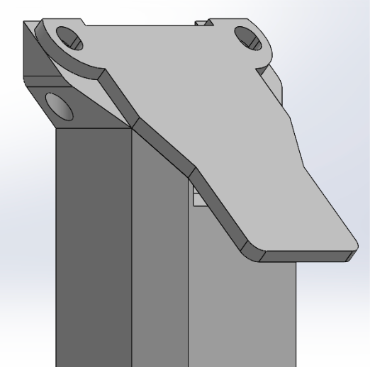
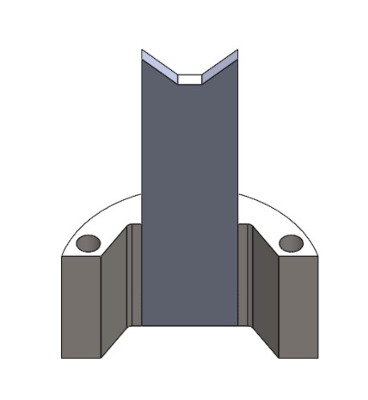
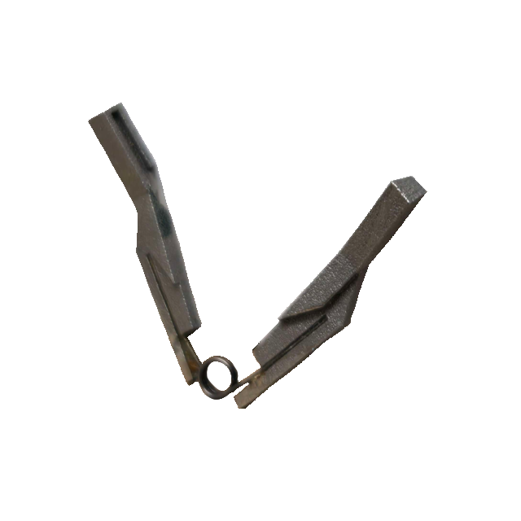
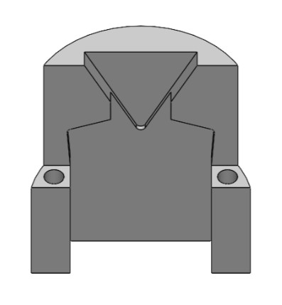
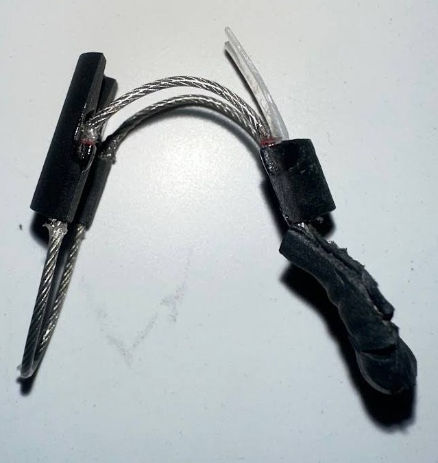
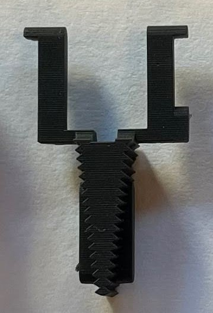
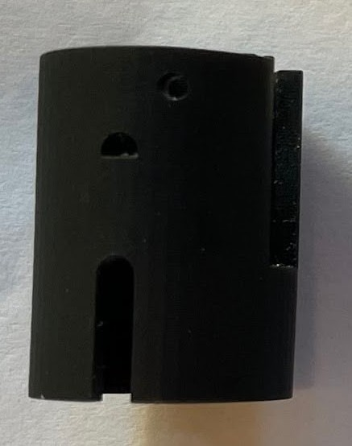

Endoscopic Clip Applier
I led the design and development of a robotically assisted multiload endoscopic clip applier intended to interface with Intuitive Surgical’s Da Vinci system. The project required precise mechanical actuation, constrained packaging, compact internal integration, and repeated prototype iteration to achieve reliable clip loading and deployment.
Background
During cardiothoracic procedures such as heart and lung surgery, surgeons frequently use robot-assisted systems like Intuitive Surgical’s Da Vinci Xi. This system uses detachable robotic arms to provide precise motion control, allowing surgeons to operate within the patient with a high degree of accuracy.
Problem Definition
During surgery, an endoscopic clip applier is used to limit blood flow in vessels. In a conventional workflow, the applier is manually loaded with a clip in its jaws, inserted into the body through a surgical port, and fired once positioned correctly.
After deployment, a surgical assistant must remove the instrument, manually attach a new clip from a cartridge, and reinsert it through the port before the procedure can continue. This process introduces inefficiency and becomes especially problematic in time-sensitive situations such as internal bleeding.
Objective
The goal of this project was to design a robotically assisted multiload clip applier that could integrate with the existing Da Vinci system used at UCSD Health. The device needed to store multiple titanium clips while remaining straightforward and intuitive in operation during surgical use.
Primary Requirements
- Compatible with the existing Da Vinci system.
- Automatic reloading within the patient.
- Minimum clip capacity of three titanium clips.
Secondary Requirements
- Ideally fits through an 8 mm diameter shaft, with a maximum of 15 mm.
- Uses biocompatible and steam-sterilizable materials.
Final Design Overview
The multiload clip applier consists of seven key components: a clip cartridge, a clip pusher plate, clip applier jaws, a jaw closer plate, a cable system, a clip cartridge holder, and an outer shell. These components were compactly arranged within the shell to reduce the risk of tissue pinching from moving internal parts.
The core mechanism uses a cable-driven system to align and actuate the two plates with precise motion. When one side of the cable is pulled, a clip is advanced from the cartridge into the jaws. Pulling the opposite side closes the jaws, firing and compressing the clip. This cycle can then be repeated as needed during the procedure, reducing interruptions and streamlining clip application.
Device Components
The final device was organized around seven major components that work together to store, align, transfer, and deploy titanium clips within a compact robotic surgical form factor.
Clip Cartridge

The clip cartridge serves as the storage and loading mechanism for multiple titanium clips. It ensures that clips are aligned for transfer into the applier jaws. The clips are stacked at a 45 degree angle within the cartridge, and as each clip is used, a spring-loaded mechanism pushes the next clip into position for reloading. The cartridge also has an extrusion on its back to secure the applier jaws in position so that they can be aligned with the awaiting clip.
Clip Pusher Plate

The pusher plate is responsible for transferring clips from the cartridge into the applier jaws. The plate moves in a controlled linear motion, with the extended tab feeding into a slit in the front of the cartridge to push a clip into the correct position.
Clip Applier Jaws

The applier jaws are the functional ends of the device that hold and compress the titanium clip around the target tissue. The inner surface of the jaws contains a groove to hold a clip in position until ready for firing, with the ends being sloped to properly orient the clip. The two jaws are separate, connected via a torsional spring to allow for the required closing and opening motion needed.
Jaw Closer Plate

The closer plate is responsible for actuating the clip applier jaws. When the plate moves in a controlled linear motion, it compresses the jaws to fire a clip onto the targeted vessel.
Cable System

A cable is threaded through the holes present in both plates, enabling controlled movement of the main mechanism in the assembly. When one side is pulled, the pusher plate moves up, loading a clip into place, and when the other side is pulled, the closer plate moves up, compressing the jaws to fire the clip.
Clip Cartridge Holder

The cartridge holder anchors the clip cartridge to the outer shell, providing structural rigidity to the inner assembly. Additionally, the upper extrusions act as supports for the cable system, ensuring proper tension is maintained in the wire. The holder also connects the clip applier to the da Vinci rod with the teeth on the bottom section, providing a secure grip during surgical applications.
Outer Shell

The outer shell houses all internal components of the assembly, ensuring that no moving parts come into contact with surrounding tissues. It is removable and reusable, allowing multiple clip appliers to share the component.
What I worked on
- Led a team of four undergraduate engineers through concept development, CAD design, prototyping, and testing.
- Designed custom machined parts and mechanical interfaces for the multiload clip deployment mechanism.
- Managed tolerance stack-ups, packaging constraints, and alignment requirements for reliable actuation.
- Coordinated prototype builds and used testing feedback to refine the design.
Key Engineering Challenges
- Packaging a functional multiload mechanism within a highly constrained robotic surgical form factor.
- Maintaining smooth cable-driven motion and alignment across repeated loading and firing cycles.
- Balancing compactness, manufacturability, and reliable clip deployment performance.
What I learned
- How to lead a small engineering team through an end-to-end hardware design project.
- How to refine mechanisms through structured prototyping and repeated testing.
- How packaging, tolerance decisions, and internal interfaces directly affect system reliability.
Tools / Methods
CAD, tolerance stack-up analysis, mechanism design, prototype fabrication, cable-driven actuation, iterative testing, packaging analysis, and surgical device design constraints.